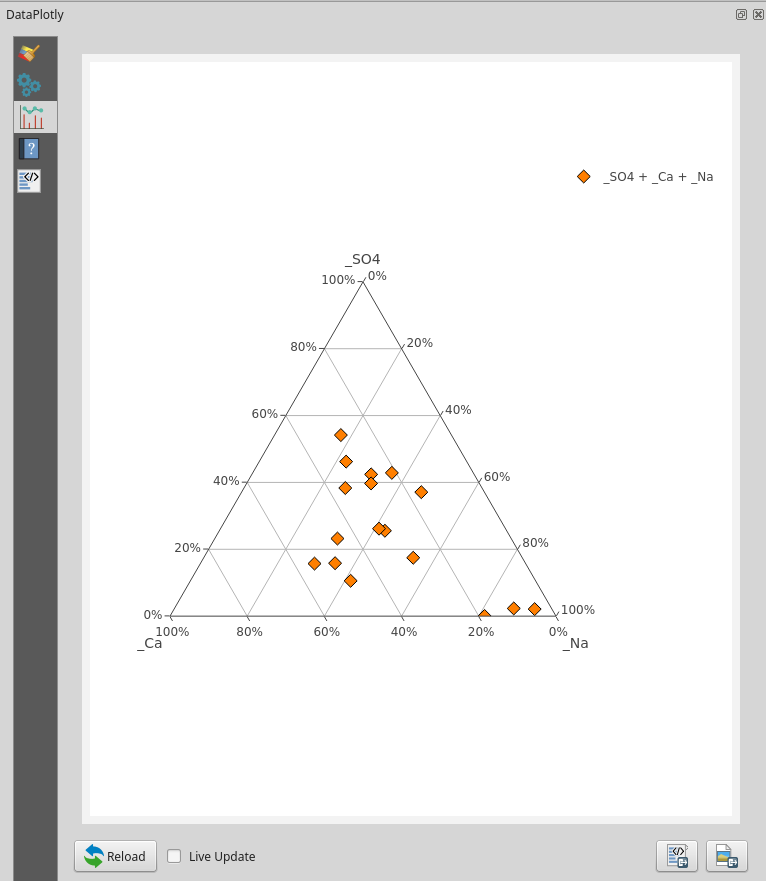

Grafico ternario
Qui trovi la guida di tutti i parametri del grafico ternario. Se hai bisogno di informazioni più generali consulta Utilizzo basico di DataPlotly.


Proprietà del grafico
Layer: il menu a tendina mostra tutti i vettori caricati in QGIS
Campo X: il campo X
Campo Y: il campo Y
Campo Z: il campo Z
Colore del simbolo: colore del simbolo
Proprietà definite dai dati: puoi aggiungere un’espressione per definire il colore in funzione del valore di un simbolo. Se attivato sono disponibili anche Scala di colori, Visibile e Inverti colori.
Dimensione simbolo: la dimensione del simbolo
Proprietà definite dai dati: puoi aggiungere un’espressione per definire la dimensione del simbolo
Colore del bordo: colore del bordo
Spessore bordo: spessore del bordo
Tipo di punto: tipo di simbolo
Trasparenza: livello di trasparenza del simbolo/linea
Personalizzazioni grafico
Mostra legenda: mostra la legenda del grafico
Legenda orizzontale: spunta se vuoi che la legenda sia orizzontale
Titolo grafico: titolo del grafico
Titolo legenda: il titolo della legenda
Etichetta X: testo dell’asse X
Etichetta Y: testo dell’asse Y
Etichetta Z: testo dell’asse Z
Etichetta aggiuntiva mouse: scegli un campo aggiuntivo del layer (oppure altri valori) che vuoi che vengano mostrati insieme alle altre informazioni. Questo campo supporta le espressioni: per esempio puoi scrivere 'ID di questo punto è ' || ID: